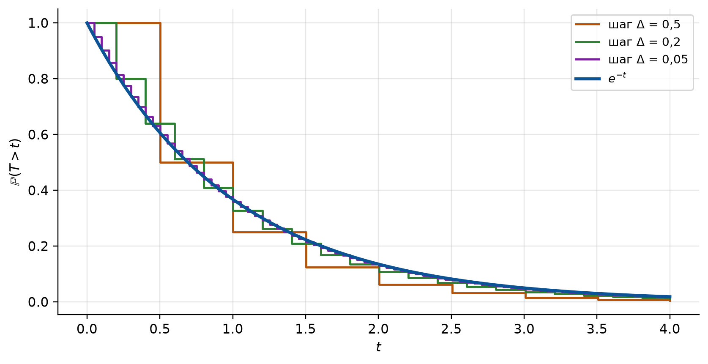
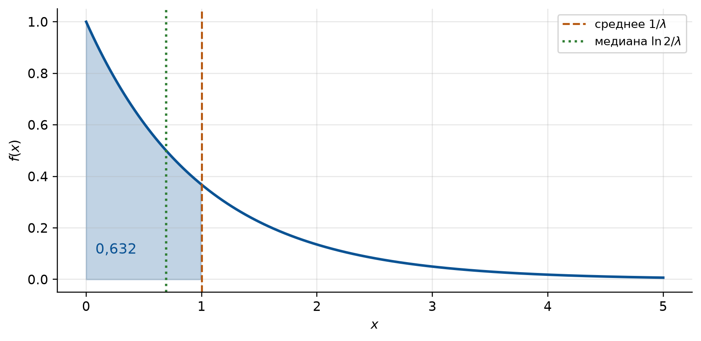
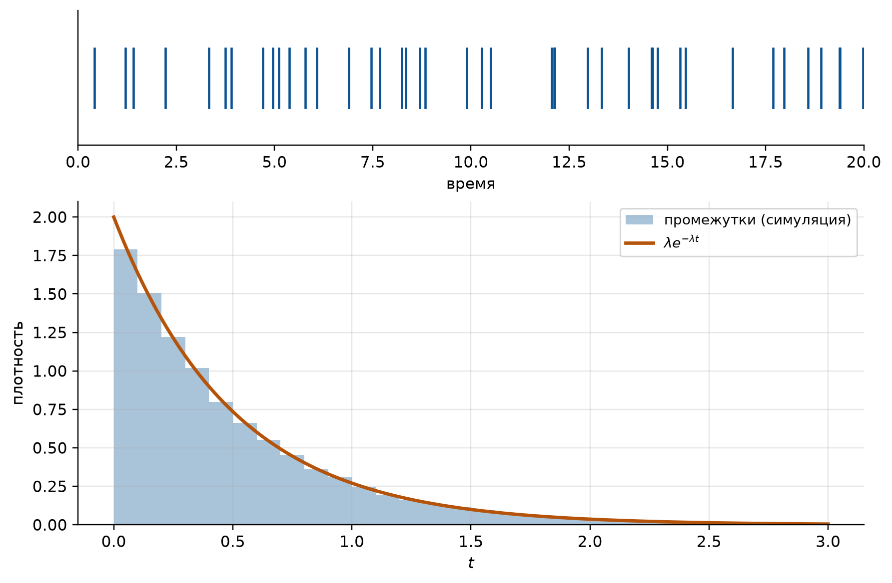
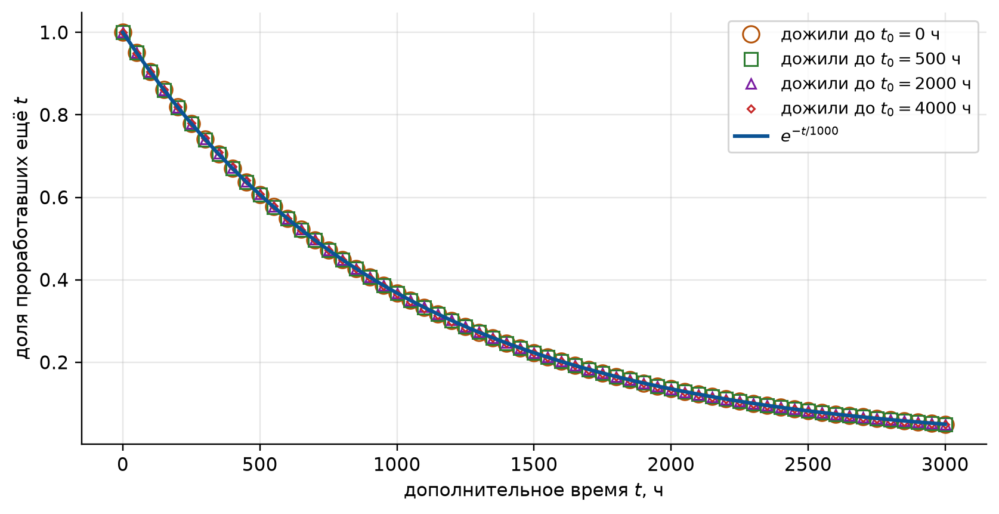

import numpy as np
import matplotlib.pyplot as plt
import sympy as sp
from math import exp, log
# Оформление графиков: шрифт с кириллицей и палитра, различимая при печати
PALETTE = ["#0b5394", "#b45309", "#2e7d32", "#7b1fa2", "#c62828", "#00838f"]
plt.rcParams.update({
"font.family": "sans-serif",
"font.sans-serif": ["DejaVu Sans", "Liberation Sans", "Noto Sans", "sans-serif"],
"axes.unicode_minus": False,
"axes.prop_cycle": plt.cycler(color=PALETTE),
"axes.spines.top": False,
"axes.spines.right": False,
"axes.grid": True,
"grid.alpha": 0.3,
"figure.dpi": 110,
"figure.constrained_layout.use": True,
})
# Генератор случайных чисел с фиксированным зерном: результаты воспроизводимы
rng = np.random.default_rng(2026)
# Символьные переменные для выкладок: x >= 0 и параметр λ > 0
x = sp.Symbol("x", nonnegative=True)
lam = sp.Symbol("lambda", positive=True)
def exp_pdf(t, rate):
"""Плотность показательного закона: rate * e^(-rate*t) при t >= 0, иначе 0."""
t = np.asarray(t, dtype=float)
return np.where(t >= 0, rate * np.exp(-rate * np.clip(t, 0, None)), 0.0)
def exp_cdf(t, rate):
"""Функция распределения показательного закона: 1 - e^(-rate*t) при t >= 0."""
t = np.asarray(t, dtype=float)
return np.where(t >= 0, 1 - np.exp(-rate * np.clip(t, 0, None)), 0.0)
def exp_sample(rate, size):
"""Выборка из показательного закона с параметром (интенсивностью) rate.
Внимание: numpy задаёт закон через МАСШТАБ scale = 1/λ, а не через λ.
rng.exponential(5) даёт среднее 5, а не 1/5.
"""
return rng.exponential(scale=1 / rate, size=size)
def describe(expr, a=0, b=sp.oo):
"""Нормировка, E(X), E(X^2), Var(X) и sigma(X) для плотности expr на (a, b).
Считается точно (sympy). Ключ "норм" должен быть равен 1.
"""
total = sp.simplify(sp.integrate(expr, (x, a, b)))
m = sp.simplify(sp.integrate(x * expr, (x, a, b)))
m2 = sp.simplify(sp.integrate(x**2 * expr, (x, a, b)))
d = sp.simplify(m2 - m**2)
return {"норм": total, "E(X)": m, "E(X^2)": m2, "Var(X)": d,
"sigma": sp.simplify(sp.sqrt(d))}
def moments(expr, a=0, b=sp.oo, kmax=4):
"""Начальные nu_k и центральные mu_k моменты плотности expr на (a, b).
Центральные считаются прямым интегрированием, а не по формулам перехода,
чтобы формулы перехода можно было проверить независимо.
"""
nu = [sp.simplify(sp.integrate(x**k * expr, (x, a, b))) for k in range(1, kmax + 1)]
mu = [sp.simplify(sp.integrate((x - nu[0]) ** k * expr, (x, a, b)))
for k in range(1, kmax + 1)]
return nu, mu
def simulate_flow(rate, horizon, dt=1e-3):
"""Простейший поток, построенный «по определению», без показательного закона.
Время [0, horizon] режется на шаги длины dt; на каждом шаге событие
происходит независимо с вероятностью rate*dt. Это и есть стационарность,
отсутствие последействия и ординарность. Возвращает моменты событий.
"""
steps = int(round(horizon / dt))
hits = rng.random(steps) < rate * dt
return (np.flatnonzero(hits) + 1) * dt
def failures_distribution(p_fail):
"""Вероятности ровно k отказов (k = 0, 1, ..., n) у n независимых элементов.
p_fail: вероятности отказа элементов. Перемножаются многочлены (q_i + p_i z);
коэффициент при z^k и есть P(отказало ровно k).
"""
coef = np.array([1.0])
for p in p_fail:
coef = np.convolve(coef, [1 - p, p])
return coef4 Семинар 4. Показательное распределение
Теория вероятностей и математическая статистика · НИЯУ МИФИ
Скачать PDF-раздатку этого семинара
4.1 Код для этой главы
Все импорты и функции, которые используются в примерах главы, собраны в одной ячейке. Выполните её первой. Остальные ячейки опираются на неё.
4.2 Краткая сводка
Семинар 3 закончился двумя законами, которые надо знать наизусть: равномерным и нормальным. Третий такой закон: показательный (его же называют экспоненциальным). Он описывает время ожидания: до отказа прибора, до распада атома, до прихода следующего клиента, до банкротства фирмы.
4.2.1 Откуда он берётся
Пусть \(T\): время ожидания события, а \[ R(t) = \Prob(T \geqslant t) \] вероятность того, что к моменту \(t\) событие ещё не произошло. Для прибора это вероятность проработать без отказа время \(t\); ниже она называется функцией надёжности. Показательный закон получается из одного предположения, и его полезно увидеть тремя способами.
1. Постоянная интенсивность (так выведено на лекции). Предположим, что вероятность наступления события за малое время \(dt\), при условии что до этого оно не наступило, равна \(\lambda\,dt\) и не зависит от того, сколько времени уже прошло. На лекции это вероятность банкротства фирмы, которая не зависит от её возраста. Чтобы дожить до \(t + dt\), нужно дожить до \(t\) и не «сломаться» за \(dt\); по теореме умножения \[ R(t + dt) = R(t)\,(1 - \lambda\,dt) \quad\Longrightarrow\quad \frac{dR}{dt} = -\lambda R(t), \qquad R(0) = 1. \] Решение этого уравнения: \(R(t) = e^{-\lambda t}\).
2. Предел геометрического закона. Разрежем время на короткие шаги длины \(\Delta\) и будем считать, что на каждом шаге событие происходит независимо с вероятностью \(\lambda\Delta\). Номер шага, на котором оно впервые случится, распределён по геометрическому закону (семинар 2). До момента \(t\) умещается \(n = t/\Delta\) шагов, и все они должны пройти «впустую»: \[ \Prob(T > t) = (1 - \lambda\Delta)^{t/\Delta} \;\xrightarrow[\Delta \to 0]{}\; e^{-\lambda t}. \] Это второй замечательный предел. Показательный закон есть непрерывный аналог геометрического.
3. Ожидание в простейшем потоке. Если события образуют простейший поток интенсивности \(\lambda\) (семинар 2, задача 12), то «до момента \(t\) событий не было» означает, что за время \(t\) поток дал ноль событий. По формуле Пуассона \[ \Prob(T \geqslant t) = P_t(0) = \frac{(\lambda t)^0 e^{-\lambda t}}{0!} = e^{-\lambda t}. \] Это задача 7 ниже.
Во всех трёх рассуждениях работает одно и то же: прошлое не влияет на будущее, шанс события в ближайший миг всё время один и тот же.
t_grid = np.linspace(0, 4, 400)
fig, ax = plt.subplots(figsize=(7.5, 3.8))
for delta, col in zip([0.5, 0.2, 0.05], PALETTE[1:4]):
n_steps = np.floor(t_grid / delta)
ax.step(t_grid, (1 - delta) ** n_steps, where="post", color=col, lw=1.6,
label=f"шаг Δ = {delta}".replace(".", ","))
ax.plot(t_grid, np.exp(-t_grid), color=PALETTE[0], lw=2.4, label="$e^{-t}$")
ax.set_xlabel("$t$")
ax.set_ylabel("$\\mathbb{P}(T > t)$")
ax.legend(fontsize=9)
plt.show()
4.2.2 Формулы
Показательным называют закон с плотностью \[ f(x) = \begin{cases} 0, & x < 0,\\ \lambda e^{-\lambda x}, & x \geqslant 0, \end{cases} \qquad \lambda > 0. \tag{4.1}\]
Функция распределения и функция надёжности: \[ F(x) = \Prob(X < x) = 1 - e^{-\lambda x}, \qquad R(x) = 1 - F(x) = e^{-\lambda x} \qquad (x \geqslant 0). \tag{4.2}\]
Вероятность попасть в интервал \((a, b)\), \(0 \leqslant a < b\): \[ \Prob(a < X < b) = F(b) - F(a) = e^{-\lambda a} - e^{-\lambda b}. \tag{4.3}\]
Числовые характеристики (выводятся в задаче 4): \[ \E(X) = \frac1\lambda, \qquad \Var(X) = \frac{1}{\lambda^2}, \qquad \sigma(X) = \frac1\lambda. \tag{4.4}\]
Среднее и среднее квадратическое отклонение совпадают: это отличительная черта показательного закона, по ней его часто узнают в данных. Медиана \(M_e = \ln 2/\lambda \approx 0{,}69/\lambda\) меньше среднего (задача 3). В ядерной физике медиану времени распада называют периодом полураспада: за это время распадается половина атомов.
Уведомление
Смысл параметра. \(\lambda\): интенсивность, среднее число событий в единицу времени (отказов в час, машин в час). \(1/\lambda\): среднее время ожидания. Размерности обратные: если \(\lambda = 5\) машин в час, то \(\E(T) = 0{,}2\) ч \(= 12\) мин.
В лекции математическое ожидание и дисперсия обозначены \(MT\) и \(DT\), у Гмурмана \(M(X)\) и \(D(X)\); это то же, что \(\E(X)\) и \(\Var(X)\) здесь.
4.2.3 Отсутствие последействия
Главное свойство показательного закона: для любых \(s, t \geqslant 0\) \[ \Prob(T \geqslant s + t \mid T \geqslant s) = \Prob(T \geqslant t) = e^{-\lambda t}. \tag{4.5}\]
Словами: если прибор уже проработал время \(s\), то вероятность проработать ещё \(t\) такая же, как у нового. Прибор не стареет. Доказательство в одну строку (задача 8): \(\dfrac{e^{-\lambda(s+t)}}{e^{-\lambda s}} = e^{-\lambda t}\).
Верно и обратное: среди непрерывных законов только показательный обладает свойством Уравнение 4.5. По сути это и доказано в рассуждении 1 выше: «шанс не зависит от прожитого времени» дал уравнение \(R' = -\lambda R\), а у него одно решение.
Важное уведомление
Когда показательный закон не годится. Предположение «не стареет» верно для внезапных отказов: пробой, скачок напряжения, распад ядра, приход клиента. Для износа (шины, подшипники, продолжительность жизни человека) оно неверно: старый образец отказывает чаще нового, и нужны другие законы.
ПредупреждениеПараметр в numpy и scipy
rng.exponential(scale) и scipy.stats.expon(scale=...) задают закон через масштаб \(1/\lambda\), а не через \(\lambda\). Вызов rng.exponential(5) даёт среднее 5, а не \(0{,}2\). В этой главе выборки строятся функцией exp_sample, которая принимает именно \(\lambda\).
4.3 Блок A. Закон, плотность, вероятности
4.3.1 Задача 1 (Гмурман, гл. 6 § 6, № 359)
Студент помнит, что плотность показательного распределения имеет вид \(f(x) = 0\) при \(x < 0\), \(f(x) = Ce^{-\lambda x}\) при \(x \geqslant 0\); однако он забыл, чему равна постоянная \(C\). Требуется найти \(C\).
СоветРешение
Неизвестную постоянную всегда даёт нормировка \(\int f = 1\) (семинар 3): \[ \int_0^\infty Ce^{-\lambda x}\,dx = C\left[-\frac1\lambda e^{-\lambda x}\right]_0^\infty = C\left(0 + \frac1\lambda\right) = \frac{C}{\lambda} = 1, \qquad C = \lambda. \]
Отсюда удобный способ прочитать \(\lambda\) по формуле: в плотности \(\lambda\) стоит дважды, множителем и в показателе; в функции распределения только в показателе. Например, у \(f(x) = 2e^{-2x}\) параметр \(\lambda = 2\), у \(F(x) = 1 - e^{-0{,}4x}\) параметр \(\lambda = 0{,}4\) (Гмурман, № 348).
Проверка: нормировка в sympy.
C = sp.Symbol("C", positive=True)
print("C =", sp.solve(sp.Eq(sp.integrate(C * sp.exp(-lam * x), (x, 0, sp.oo)), 1), C))C = [lambda]
ПредупреждениеТипичная ошибка
Записать плотность \(e^{-\lambda x}\) без множителя \(\lambda\). Площадь под ней равна \(1/\lambda\), а не 1, и все вероятности выйдут в \(\lambda\) раз меньше.
4.3.2 Задача 2 (Гмурман, гл. 6 § 6, № 352)
Непрерывная случайная величина \(X\) распределена по показательному закону, заданному функцией распределения \(F(x) = 1 - e^{-0{,}6x}\) при \(x \geqslant 0\); при \(x < 0\) \(F(x) = 0\). Найти вероятность того, что в результате испытания \(X\) попадёт в интервал \((2, 5)\).
СоветРешение
Здесь \(\lambda = 0{,}6\). Вероятность попадания в интервал есть приращение \(F\), то есть Уравнение 4.3: \[ \Prob(2 < X < 5) = F(5) - F(2) = e^{-0{,}6\cdot 2} - e^{-0{,}6\cdot 5} = e^{-1{,}2} - e^{-3} = 0{,}3012 - 0{,}0498 = 0{,}2514. \]
Проверка: формула, интеграл плотности и симуляция.
rate = 0.6
p_formula = exp(-rate * 2) - exp(-rate * 5)
p_integral = sp.integrate(rate * sp.exp(-rate * x), (x, 2, 5))
sample = exp_sample(rate, 400_000)
p_sim = ((sample > 2) & (sample < 5)).mean()
print(f"формула {p_formula:.4f}, интеграл {float(p_integral):.4f}, симуляция {p_sim:.4f}")формула 0.2514, интеграл 0.2514, симуляция 0.2508
ПредупреждениеТипичная ошибка
Вычесть значения плотности: \(f(5) - f(2)\). Плотность не вероятность; вероятность есть площадь под плотностью, то есть разность значений \(F\). Здесь \(f(5) - f(2) < 0\), и ошибка видна сразу.
УведомлениеДля самопроверки
Гмурман, № 350: \(f(x) = 3e^{-3x}\) при \(x \geqslant 0\). Найти \(\Prob(0{,}13 < X < 0{,}7)\). Ответ: \(e^{-0{,}39} - e^{-2{,}1} = 0{,}555\).
4.3.3 Задача 3 (Гмурман, гл. 6 § 6, № 355)
а) Доказать, что если непрерывная случайная величина распределена по показательному закону, то вероятность того, что \(X\) примет значение, меньшее математического ожидания \(\E(X)\), не зависит от величины параметра \(\lambda\); б) найти вероятность того, что \(X > \E(X)\).
СоветРешение
а) \(\E(X) = 1/\lambda\), поэтому \[ \Prob\big(X < \E(X)\big) = F\!\left(\frac1\lambda\right) = 1 - e^{-\lambda\cdot 1/\lambda} = 1 - e^{-1} = \frac{e - 1}{e} \approx 0{,}632. \] Параметр сократился: ответ одинаков при любом \(\lambda\).
б) \(\Prob\big(X > \E(X)\big) = e^{-1} \approx 0{,}368\).
Почему \(\lambda\) сократилась. Параметр \(\lambda\) лишь задаёт единицу измерения времени: \(\lambda X\) имеет показательный закон с параметром 1 при любом \(\lambda\). Поэтому вопросы вида «во сколько раз больше среднего» от \(\lambda\) не зависят.
Почему не \(1/2\). Для симметричной плотности среднее делит площадь пополам. Показательная плотность сильно скошена вправо: длинный хвост больших значений тянет среднее вверх, и ниже среднего оказывается почти две трети значений. Медиана находится из \(F(M_e) = 1/2\): \(1 - e^{-\lambda M_e} = 1/2\), \(M_e = \ln 2/\lambda \approx 0{,}69\,\E(X)\).
Проверка: доля значений ниже среднего при разных \(\lambda\).
print(f"точно: 1 - 1/e = {1 - exp(-1):.4f}, медиана/среднее = ln 2 = {log(2):.4f}")
for rate in [0.1, 1, 25]:
sample = exp_sample(rate, 400_000)
print(f"λ = {rate:>4}: доля X < E(X) = {(sample < 1 / rate).mean():.4f},"
f" медиана/среднее = {np.median(sample) * rate:.4f}")точно: 1 - 1/e = 0.6321, медиана/среднее = ln 2 = 0.6931
λ = 0.1: доля X < E(X) = 0.6327, медиана/среднее = 0.6925
λ = 1: доля X < E(X) = 0.6319, медиана/среднее = 0.6944
λ = 25: доля X < E(X) = 0.6322, медиана/среднее = 0.6941t_grid = np.linspace(0, 5, 500)
fig, ax = plt.subplots(figsize=(7.5, 3.6))
ax.plot(t_grid, exp_pdf(t_grid, 1), lw=2, color=PALETTE[0])
left = t_grid[t_grid <= 1]
ax.fill_between(left, 0, exp_pdf(left, 1), alpha=0.25, color=PALETTE[0])
ax.axvline(1, color=PALETTE[1], ls="--", lw=1.5, label="среднее $1/\\lambda$")
ax.axvline(log(2), color=PALETTE[2], ls=":", lw=1.8, label="медиана $\\ln 2/\\lambda$")
ax.text(0.08, 0.1, "0,632", fontsize=11, color=PALETTE[0])
ax.set_xlabel("$x$")
ax.set_ylabel("$f(x)$")
ax.legend(fontsize=9)
plt.show()
ПредупреждениеТипичная ошибка
Считать, что «ниже среднего» половина значений. Это верно только для симметричных законов (нормального, равномерного). Здесь среднее время ожидания 10 мин не означает, что в половине случаев ждать дольше 10 мин: дольше приходится ждать лишь в 37 % случаев.
4.4 Блок B. Числовые характеристики
4.4.1 Задача 4 (Гмурман, гл. 6 § 6, № 353 и 356)
Найти математическое ожидание, дисперсию и среднее квадратическое отклонение показательного распределения \(f(x) = \lambda e^{-\lambda x}\) \((x \geqslant 0)\); \(f(x) = 0\) \((x < 0)\).
СоветРешение
Удобно сразу посчитать все начальные моменты \(\nu_k = \E(X^k) = \lambda\int_0^\infty x^k e^{-\lambda x}\,dx\). По частям с \(u = x^k\), \(dv = \lambda e^{-\lambda x}dx\), \(v = -e^{-\lambda x}\): \[ \nu_k = \Big[-x^k e^{-\lambda x}\Big]_0^\infty + k\int_0^\infty x^{k-1} e^{-\lambda x}\,dx = 0 + \frac{k}{\lambda}\,\nu_{k-1}. \] Внеинтегральный член равен нулю: в нуле из-за \(x^k\), на бесконечности потому, что экспонента убывает быстрее любой степени. Начиная с \(\nu_0 = 1\) (нормировка): \[ \nu_1 = \frac1\lambda, \qquad \nu_2 = \frac{2}{\lambda^2}, \qquad \nu_3 = \frac{6}{\lambda^3}, \qquad \nu_k = \frac{k!}{\lambda^k}. \]
Отсюда \[ \E(X) = \nu_1 = \frac1\lambda, \qquad \Var(X) = \nu_2 - \nu_1^2 = \frac{2}{\lambda^2} - \frac{1}{\lambda^2} = \frac{1}{\lambda^2}, \qquad \sigma(X) = \frac1\lambda. \]
Здравый смысл. Чем выше интенсивность \(\lambda\), тем чаще происходят события и тем короче ожидание: \(\E(X) = 1/\lambda\) убывает по \(\lambda\). Если в среднем приходит 5 машин в час, то в среднем машина приходит раз в \(1/5\) часа.
Проверка: символьные интегралы и симуляция при \(\lambda = 4\).
print(describe(lam * sp.exp(-lam * x)))
print("nu_k:", moments(lam * sp.exp(-lam * x))[0])
rate = 4
sample = exp_sample(rate, 400_000)
print(f"\nсимуляция при λ = {rate}: E = {sample.mean():.4f} (точно {1/rate:.4f}),"
f" Var = {sample.var():.4f} (точно {1/rate**2:.4f}),"
f" sigma = {sample.std():.4f}"){'норм': 1, 'E(X)': 1/lambda, 'E(X^2)': 2/lambda**2, 'Var(X)': lambda**(-2), 'sigma': 1/lambda}
nu_k: [1/lambda, 2/lambda**2, 6/lambda**3, 24/lambda**4]
симуляция при λ = 4: E = 0.2502 (точно 0.2500), Var = 0.0626 (точно 0.0625), sigma = 0.25014.4.2 Задача 5 (Гмурман, гл. 6 § 6, № 358)
Найти дисперсию и среднее квадратическое отклонение показательного закона, заданного функцией распределения \(F(x) = 1 - e^{-0{,}4x}\) \((x \geqslant 0)\).
СоветРешение
По показателю \(\lambda = 0{,}4\). По Уравнение 4.4 \[ \Var(X) = \frac{1}{0{,}4^2} = \frac{1}{0{,}16} = 6{,}25, \qquad \sigma(X) = \frac{1}{0{,}4} = 2{,}5. \] И конечно \(\E(X) = 2{,}5\) тоже.
УведомлениеДля самопроверки
Гмурман, № 357: \(f(x) = 10e^{-10x}\) \((x \geqslant 0)\). Ответ: \(\Var(X) = 0{,}01\), \(\sigma(X) = 0{,}1\).
4.4.3 Задача 6 (Гмурман, гл. 6 § 6, № 360 и 361)
Найти теоретический центральный момент третьего порядка \(\mu_3 = \E\big[X - \E(X)\big]^3\) и асимметрию \(A_s = \mu_3/\sigma^3(X)\) показательного распределения.
СоветРешение
Начальные моменты уже есть из задачи 4: \(\nu_k = k!/\lambda^k\). По формуле перехода (семинар 3) \[ \mu_3 = \nu_3 - 3\nu_2\nu_1 + 2\nu_1^3 = \frac{6}{\lambda^3} - 3\cdot\frac{2}{\lambda^2}\cdot\frac1\lambda + \frac{2}{\lambda^3} = \frac{6 - 6 + 2}{\lambda^3} = \frac{2}{\lambda^3}. \] Асимметрия \[ A_s = \frac{\mu_3}{\sigma^3} = \frac{2/\lambda^3}{1/\lambda^3} = 2. \]
\(A_s > 0\): длинный хвост справа, как и видно на графике в задаче 3. И снова ответ не зависит от \(\lambda\): асимметрия безразмерна, а \(\lambda\) меняет только масштаб (задача 3). У любого показательного закона асимметрия равна 2; для сравнения, у нормального она равна 0.
Проверка: центральные моменты прямым интегрированием, без формул перехода.
nu, mu = moments(lam * sp.exp(-lam * x))
print("mu_3 =", mu[2], " A_s =", sp.simplify(mu[2] / (1 / lam) ** 3))
sample = exp_sample(1, 1_000_000)
centered = sample - sample.mean()
print(f"симуляция при λ = 1: A_s = {(centered**3).mean() / sample.std()**3:.3f} (точно 2)")mu_3 = 2/lambda**3 A_s = 2
симуляция при λ = 1: A_s = 2.014 (точно 2)4.5 Блок C. Поток событий и надёжность
4.5.1 Задача 7 (Гмурман, гл. 6 § 6, № 364)
Доказать, что непрерывная случайная величина \(T\), время между появлениями двух последовательных событий простейшего потока с заданной интенсивностью \(\lambda\), имеет показательное распределение \(F(t) = 1 - e^{-\lambda t}\) \((t \geqslant 0)\).
СоветРешение
Пусть в момент \(t_0\) произошло событие потока. Следующее событие наступит раньше, чем через время \(t\) (то есть \(T < t\)), тогда и только тогда, когда на интервале \((t_0,\ t_0 + t)\) произойдёт хотя бы одно событие. Переходим к противоположному: «ни одного события за время \(t\)». По формуле Пуассона для простейшего потока \[ P_t(0) = \frac{(\lambda t)^0 e^{-\lambda t}}{0!} = e^{-\lambda t}, \] поэтому \[ F(t) = \Prob(T < t) = 1 - P_t(0) = 1 - e^{-\lambda t}. \qquad \blacksquare \]
Здесь существенно отсутствие последействия потока: то, что событие только что произошло в момент \(t_0\), не меняет вероятностей для интервала, который начинается с \(t_0\). Поэтому все промежутки между событиями распределены одинаково.
Два взгляда на один поток. Число событий за время \(t\) распределено по Пуассону (дискретная величина), а промежутки между событиями распределены показательно (непрерывная величина). Это одна модель, описанная с двух сторон.
Проверка: поток строится «по определению» (крошечные шаги, на каждом событие с вероятностью \(\lambda\,dt\)), показательный закон в симуляцию не заложен. Сравниваем промежутки между событиями с формулой.
rate = 2.0
events = simulate_flow(rate, horizon=50_000, dt=1e-3)
gaps = np.diff(events)
print(f"событий: {len(events)}, в единицу времени {len(events) / 50_000:.4f} (λ = {rate})")
print(f"средний промежуток {gaps.mean():.4f} (1/λ = {1/rate:.4f}),"
f" sigma {gaps.std():.4f} (1/λ = {1/rate:.4f})")
for t in [0.1, 0.5, 1.0, 2.0]:
print(f"P(T ≤ {t}): симуляция {(gaps <= t).mean():.4f}, 1 - e^(-λt) = {1 - exp(-rate * t):.4f}")событий: 99906, в единицу времени 1.9981 (λ = 2.0)
средний промежуток 0.5005 (1/λ = 0.5000), sigma 0.4995 (1/λ = 0.5000)
P(T ≤ 0.1): симуляция 0.1787, 1 - e^(-λt) = 0.1813
P(T ≤ 0.5): симуляция 0.6324, 1 - e^(-λt) = 0.6321
P(T ≤ 1.0): симуляция 0.8650, 1 - e^(-λt) = 0.8647
P(T ≤ 2.0): симуляция 0.9814, 1 - e^(-λt) = 0.9817fig, axes = plt.subplots(2, 1, figsize=(8, 5.2), height_ratios=[1, 2.4])
shown = events[events < 20]
axes[0].eventplot(shown, colors=PALETTE[0], lineoffsets=0, linelengths=0.8)
axes[0].set_yticks([])
axes[0].set_xlim(0, 20)
axes[0].set_xlabel("время")
axes[0].grid(False)
t_grid = np.linspace(0, 3, 300)
axes[1].hist(gaps, bins=np.arange(0, 3.05, 0.1), density=True, color=PALETTE[0],
alpha=0.35, label="промежутки (симуляция)")
axes[1].plot(t_grid, exp_pdf(t_grid, rate), color=PALETTE[1], lw=2.2,
label="$\\lambda e^{-\\lambda t}$")
axes[1].set_xlabel("$t$")
axes[1].set_ylabel("плотность")
axes[1].legend(fontsize=9)
plt.show()
4.5.2 Задача 8 (Гмурман, гл. 6 § 7, № 372)
Показательным законом надёжности называют функцию надёжности, определяемую равенством \(R(t) = e^{-\lambda t}\), где положительное число \(\lambda\): интенсивность отказов. Доказать характеристическое свойство показательного закона надёжности: вероятность безотказной работы элемента в интервале времени длительностью \(t\) не зависит от времени предшествующей работы до начала рассматриваемого интервала, а зависит только от длительности интервала \(t\) (при заданной интенсивности отказов \(\lambda\)).
СоветРешение
Пусть \(T\): время безотказной работы, \(A = \{T \geqslant t_0\}\): элемент проработал без отказа время \(t_0\), \(B = \{T \geqslant t_0 + t\}\): элемент проработал без отказа ещё время \(t\) после этого. Нужна условная вероятность \(\Prob(B \mid A)\).
Если элемент дожил до \(t_0 + t\), то он дожил и до \(t_0\), поэтому \(B \subset A\) и \(AB = B\). По определению условной вероятности (семинар 1) \[ \Prob(B \mid A) = \frac{\Prob(AB)}{\Prob(A)} = \frac{\Prob(B)}{\Prob(A)} = \frac{R(t_0 + t)}{R(t_0)} = \frac{e^{-\lambda(t_0 + t)}}{e^{-\lambda t_0}} = e^{-\lambda t} = R(t). \] В ответе нет \(t_0\): сколько бы элемент ни проработал до этого, вероятность проработать ещё \(t\) та же, что у нового элемента. \(\blacksquare\)
Ключевой шаг: \(e^{-\lambda(t_0+t)} = e^{-\lambda t_0}\,e^{-\lambda t}\). Функция надёжности превращает сумму времён в произведение вероятностей; из непрерывных функций так умеет только экспонента.
Проверка: берём \(10^6\) «ламп» со средним сроком службы 1000 ч и смотрим на тех, кто дожил до \(t_0\). Какая доля из них проработает ещё 1000 ч?
rate = 1 / 1000
life = exp_sample(rate, 1_000_000)
print(f"R(1000) = e^(-1) = {exp(-1):.4f}")
for t0 in [0, 500, 2000, 4000]:
alive = life[life >= t0]
share = (alive >= t0 + 1000).mean()
print(f"дожили до {t0:>4} ч: {len(alive):>7}; из них проработали ещё 1000 ч: {share:.4f}")R(1000) = e^(-1) = 0.3679
дожили до 0 ч: 1000000; из них проработали ещё 1000 ч: 0.3679
дожили до 500 ч: 607048; из них проработали ещё 1000 ч: 0.3678
дожили до 2000 ч: 135566; из них проработали ещё 1000 ч: 0.3678
дожили до 4000 ч: 18278; из них проработали ещё 1000 ч: 0.3657t_grid = np.linspace(0, 3000, 61)
fig, ax = plt.subplots(figsize=(7.5, 3.8))
for t0, col, mark, size in zip([0, 500, 2000, 4000], PALETTE[1:5], ["o", "s", "^", "D"],
[9, 7, 5, 3]):
rest = life[life >= t0] - t0
ax.plot(t_grid, [(rest >= t).mean() for t in t_grid], mark, ms=size, mfc="none",
color=col, label=f"дожили до $t_0 = {t0}$ ч")
ax.plot(t_grid, np.exp(-rate * t_grid), color=PALETTE[0], lw=2, label="$e^{-t/1000}$")
ax.set_xlabel("дополнительное время $t$, ч")
ax.set_ylabel("доля проработавших ещё $t$")
ax.legend(fontsize=9)
plt.show()
ПредупреждениеТипичная ошибка
Считать, что проработавший \(t_0\) элемент «уже потратил ресурс», и писать \(R(t_0 + t)\) вместо \(R(t)\). Вероятность \(R(t_0 + t)\) отвечает на другой вопрос: какова вероятность, что новый элемент проработает \(t_0 + t\). Когда известно, что он уже дожил до \(t_0\), нужна условная вероятность.
УведомлениеДля самопроверки
Средний срок службы лампы 1000 ч, закон показательный. Лампа уже проработала 1500 ч. Какова вероятность, что она проработает ещё хотя бы 500 ч? Какова она для новой лампы? Ответ: в обоих случаях \(e^{-0{,}5} \approx 0{,}607\).
4.5.3 Задача 9 (Гмурман, гл. 6 § 6, № 366)
На шоссе установлен контрольный пункт для проверки технического состояния автомобилей. Найти математическое ожидание и среднее квадратическое отклонение случайной величины \(T\), времени ожидания очередной машины контролером, если поток машин простейший и время (в часах) между прохождениями машин через контрольный пункт распределено по показательному закону \(f(t) = 5e^{-5t}\).
СоветРешение
Контролер начинает ждать не обязательно в момент прохода машины, а в какой-то момент между машинами. Время ожидания меньше промежутка между машинами, и кажется, что и распределено оно иначе.
Но по задаче 8 показательный закон не помнит прошлого: сколько бы времени ни прошло после предыдущей машины, остаток ожидания распределён так же, как весь промежуток. Поэтому \(T\) имеет тот же закон \(f(t) = 5e^{-5t}\), \(\lambda = 5\), и по Уравнение 4.4 \[ \E(T) = \sigma(T) = \frac15 \text{ ч} = 12 \text{ мин}. \]
Парадокс ожидания. Средний промежуток между машинами 12 мин, и интуиция подсказывает, что пришедший в случайный момент контролер будет ждать в среднем половину промежутка, 6 мин. Это неверно, и тому две причины. Во-первых, отсутствие последействия. Во-вторых, случайный момент чаще попадает в длинные промежутки, просто потому что они длиннее. Это тот же эффект, из-за которого на остановке автобус «всегда долго не идёт».
Проверка: моделируем простейший поток машин (\(\lambda = 5\) в час) и контролера, который приходит в случайные моменты.
rate = 5.0
cars = simulate_flow(rate, horizon=20_000, dt=1e-4)
arrive = rng.uniform(0, cars[-2], 200_000) # моменты прихода контролера
wait = cars[np.searchsorted(cars, arrive)] - arrive # до ближайшей следующей машины
print(f"средний промежуток между машинами: {np.diff(cars).mean() * 60:.2f} мин")
print(f"ожидание контролера: E = {wait.mean() * 60:.2f} мин, sigma = {wait.std() * 60:.2f} мин"
f" (теория: 12 и 12)")средний промежуток между машинами: 11.94 мин
ожидание контролера: E = 11.88 мин, sigma = 11.84 мин (теория: 12 и 12)
ПредупреждениеТипичная ошибка
Ответить «6 минут», поделив средний промежуток пополам. Так было бы, если бы машины шли строго по расписанию, раз в 12 мин. У простейшего потока расписания нет.
4.5.4 Задача 10 (Гмурман, гл. 6 § 7, № 369)
Испытывают два независимо работающих элемента. Длительность времени безотказной работы первого элемента имеет показательное распределение \(F_1(t) = 1 - e^{-0{,}02t}\), второго \(F_2(t) = 1 - e^{-0{,}05t}\). Найти вероятность того, что за время длительностью \(t = 6\) ч: а) оба элемента откажут; б) оба элемента не откажут; в) только один элемент откажет; г) хотя бы один элемент откажет.
СоветРешение
Функция распределения \(F(t)\) даёт вероятность отказа за время \(t\), функция надёжности \(R(t) = 1 - F(t)\) даёт вероятность безотказной работы. За 6 ч: \[ p_1 = F_1(6) = 1 - e^{-0{,}12} = 0{,}1131, \qquad q_1 = R_1(6) = e^{-0{,}12} = 0{,}8869, \] \[ p_2 = F_2(6) = 1 - e^{-0{,}3} = 0{,}2592, \qquad q_2 = R_2(6) = e^{-0{,}3} = 0{,}7408. \] Дальше работают теоремы сложения и умножения из семинара 1:
а) \(p_1p_2 = 0{,}1131\cdot0{,}2592 = 0{,}0293\);
б) \(q_1q_2 = 0{,}8869\cdot0{,}7408 = 0{,}6570\);
в) «только один» = «первый отказал, второй нет» или «наоборот»: \(p_1q_2 + q_1p_2 = 0{,}0838 + 0{,}2299 = 0{,}3136\);
г) «хотя бы один» через противоположное: \(1 - q_1q_2 = 0{,}3430\).
Контроль: а), б), в) описывают все возможности (0, 1 или 2 отказа), и их сумма \(0{,}0293 + 0{,}6570 + 0{,}3136 = 1\). \(\checkmark\) Книга даёт те же числа, округлённые до двух знаков: \(0{,}03\); \(0{,}66\); \(0{,}31\); \(0{,}34\).
Заметим: \(q_1q_2 = e^{-0{,}12}e^{-0{,}3} = e^{-(0{,}02 + 0{,}05)\cdot 6}\). Система из двух элементов, которая работает, пока работают оба, сама имеет показательный закон надёжности с интенсивностью \(0{,}02 + 0{,}05 = 0{,}07\): при последовательном соединении интенсивности отказов складываются.
Проверка: расчёт по формулам и распределение числа отказов.
p_fail = [1 - exp(-0.02 * 6), 1 - exp(-0.05 * 6)]
dist = failures_distribution(p_fail)
print("P(ровно k отказов), k = 0, 1, 2:", dist.round(4))
print(f"а) {dist[2]:.4f} б) {dist[0]:.4f} в) {dist[1]:.4f} г) {1 - dist[0]:.4f}")P(ровно k отказов), k = 0, 1, 2: [0.657 0.3136 0.0293]
а) 0.0293 б) 0.6570 в) 0.3136 г) 0.3430
ПредупреждениеТипичная ошибка
В пункте в) взять только \(p_1q_2\) или написать \(p_1 + p_2\). «Только один»: два несовместных варианта, каждый из которых есть произведение (один отказал и другой не отказал).
4.5.5 Задача 11 (Гмурман, гл. 6 § 7, № 370)
Испытывают три элемента, которые работают независимо один от другого. Длительность времени безотказной работы элементов распределена по показательному закону: для первого элемента \(F_1(t) = 1 - e^{-0{,}1t}\); для второго \(F_2(t) = 1 - e^{-0{,}2t}\); для третьего элемента \(F_3(t) = 1 - e^{-0{,}3t}\). Найти вероятности того, что в интервале времени \((0, 5)\) ч откажут: а) только один элемент; б) только два элемента; в) все три элемента.
СоветРешение
Вероятности отказа за 5 ч: \[ p_1 = 1 - e^{-0{,}5} = 0{,}3935, \quad p_2 = 1 - e^{-1} = 0{,}6321, \quad p_3 = 1 - e^{-1{,}5} = 0{,}7769, \] и \(q_i = 1 - p_i\): \(0{,}6065\); \(0{,}3679\); \(0{,}2231\).
а) Ровно один: три варианта, кто именно отказал: \[ p_1q_2q_3 + q_1p_2q_3 + q_1q_2p_3 = 0{,}0323 + 0{,}0855 + 0{,}1733 = 0{,}2912. \]
б) Ровно два: три варианта, кто именно не отказал: \[ p_1p_2q_3 + p_1q_2p_3 + q_1p_2p_3 = 0{,}0555 + 0{,}1125 + 0{,}2979 = 0{,}4658. \]
в) Все три: \(p_1p_2p_3 = 0{,}1932\).
Контроль: вместе с «ни одного» \(q_1q_2q_3 = 0{,}0498\) сумма равна 1. \(\checkmark\)
В ответах задачника к пункту а) напечатано \(0{,}292\): так получается, если округлить \(p_i\) до двух знаков. Точное значение \(0{,}291\).
Проверка: расчёт через функцию failures_distribution и прямая симуляция трёх элементов.
rates = np.array([0.1, 0.2, 0.3])
dist = failures_distribution(1 - np.exp(-rates * 5))
lives = exp_sample(rates, (1_000_000, 3))
k_failed = (lives < 5).sum(axis=1)
for k in range(4):
print(f"отказов ровно {k}: расчёт {dist[k]:.4f}, симуляция {(k_failed == k).mean():.4f}")отказов ровно 0: расчёт 0.0498, симуляция 0.0495
отказов ровно 1: расчёт 0.2912, симуляция 0.2917
отказов ровно 2: расчёт 0.4658, симуляция 0.4651
отказов ровно 3: расчёт 0.1932, симуляция 0.19374.6 Задачи для самостоятельной работы
- (Гмурман, № 351.) Непрерывная случайная величина \(X\) распределена по показательному закону, заданному при \(x \geqslant 0\) плотностью распределения \(f(x) = 0{,}04\cdot e^{-0{,}04x}\); при \(x < 0\) функции \(f(x) = 0\). Найти вероятность того, что в результате испытания \(X\) попадает в интервал \((1, 2)\).
- (Гмурман, № 362 и 363.) Найти теоретический центральный момент четвёртого порядка \(\mu_4 = \E\big[X - \E(X)\big]^4\) и эксцесс \(E_k = \mu_4/\sigma^4(X) - 3\) показательного распределения.
- (Гмурман, № 368.) Длительность времени безотказной работы элемента имеет показательное распределение \(F(t) = 1 - e^{-0{,}03t}\). Найти вероятность того, что за время длительностью \(t = 100\) ч: а) элемент откажет; б) элемент не откажет.
- (Гмурман, № 371.) Производится испытание трёх элементов, работающих независимо один от другого. Длительность времени безотказной работы элементов распределена по показательному закону: для первого элемента \(f_1(t) = 0{,}1e^{-0{,}1t}\), для второго \(f_2(t) = 0{,}2e^{-0{,}2t}\), для третьего элемента \(f_3(t) = 0{,}3e^{-0{,}3t}\). Найти вероятности того, что в интервале времени \((0, 10)\) ч откажут: а) хотя бы один элемент; б) не менее двух элементов.
СоветОтветы
\(\lambda = 0{,}04\): \(\Prob(1 < X < 2) = e^{-0{,}04} - e^{-0{,}08} = 0{,}9608 - 0{,}9231 = 0{,}038\). Вероятность мала, потому что среднее \(1/0{,}04 = 25\) и интервал \((1, 2)\) занимает крохотную часть типичных значений.
\(\nu_4 = 24/\lambda^4\), и по формуле перехода \(\mu_4 = \nu_4 - 4\nu_3\nu_1 + 6\nu_2\nu_1^2 - 3\nu_1^4 = (24 - 24 + 12 - 3)/\lambda^4 = 9/\lambda^4\); \(E_k = 9 - 3 = 6\). Эксцесс положителен и большой: хвост у показательного закона тяжелее, чем у нормального (у того \(E_k = 0\)).
\(\lambda = 0{,}03\), \(\lambda t = 3\): а) \(F(100) = 1 - e^{-3} = 0{,}95\); б) \(R(100) = e^{-3} = 0{,}05\). Время 100 ч втрое больше среднего срока службы \(1/0{,}03 \approx 33\) ч, так что отказ почти неизбежен.
\(p_1 = 1 - e^{-1} = 0{,}632\), \(p_2 = 1 - e^{-2} = 0{,}865\), \(p_3 = 1 - e^{-3} = 0{,}950\). а) \(1 - q_1q_2q_3 = 1 - e^{-6} = 0{,}9975\); б) «ровно два» + «все три» \(= 0{,}411 + 0{,}519 = 0{,}930\).
Внимание: в ответах задачника к пункту б) напечатано \(0{,}656\). Это ошибка книги: \(0{,}656 = 0{,}466 + 0{,}19\), сумма ответов б) и в) задачи 11, то есть «не менее двух отказов» за 5 ч, а не за 10 ч. Проверка на здравый смысл: за 10 ч каждый элемент отказывает с вероятностью не меньше \(0{,}632\), а даже при трёх одинаковых \(p = 0{,}632\) вероятность «не менее двух» равна \(3p^2q + p^3 = 0{,}69 > 0{,}656\).